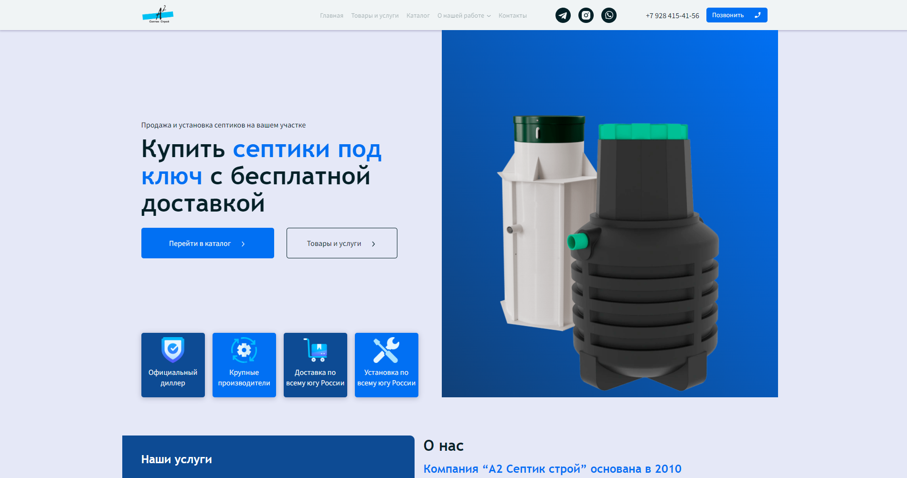
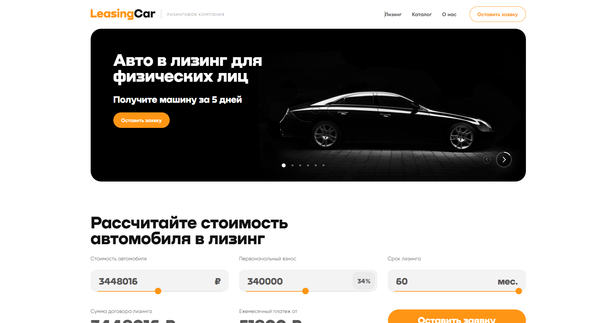

Привет! Меня зовут Роман Доденко
И я Frontend-разработчик
Разработкой сайтов занимаюсь 1.8 лет. Умею верстать html
письма, а так же создавать анимацию на css и js. Мой стэк: HTML5, CSS3, для работы с css использую
препроцессор SASS - диалект SCSS,
JavaScript. Использую методологию БЭМ, а так же сборщик Gulp.
Мои навыки и умения
HTML5
CSS3
JavaScript
Семантическая вёрстка
Адаптивная вёрстка
Анимации на CSS и JavaScript
Кроссбраузерная вёрстка
Flexbox
Grid
SASS - диалект SCSS
Валидная вёрстка
Bootstrap
Gulp
Методология БЭМ
Git
Html письма
Get , post запросы на fetch
Менторство
Портфолио
Коммерческие проекты
Лендинг сайта медицинского портала Medars. Сайт был разработан с нуля. Был
реализован слайдер, выпадающее меню, анимация, аккордеон, сложная вёрстка и адаптив.
Сайт состоит из 74 страниц. Сайт был разработан с нуля. На данном сайте
сделал множество слайдеров, кастомные селекты, кастомные инпуты, кастомные радио кнопки. Аккордеон,
табы. Подгрузку элементов при нажатии на кнопку. Была проделана большая работа с DOM деревом. При
наведении на пользователя на главной странице появляется статистика пользователя. Добавление полей в
конструкторе документов, появление элемента при заполнение инпута. Сложный адаптив.
Лендинг сайта шоу Искушение. Сайт был разработан с нуля. На данном сайте
реализовал дождь, через canvas. При наведение на главный блок, появляются фотографии. Классный ховер
эффект капель при наведение на кнопку билеты.
Сайт состоит из 6 страниц. Сайт был разработан с нуля. На данном сайте
сделал множество кастомных инпутов, селектов. Кастомный скролл. Фильтр в каталоге. Попапы. Grid
сетку. Вставил яндекс карту, с ленивой загрузкой( условно если пользователь приближается к карте, до
неё остается 500 пикселей, она загружается ), такой метод улучшает загрузка сайта. Сложный адаптив.

Сайт состоит из 10 страниц. Сайт был разработан с нуля. На данном сайте
сделал выпадающий список в меню. Множество слайдеров. Двойной слайдер. Яндекс карты. Грид сетки.
Сделал отправку форм на сервер, через метод fetch.
Лендинг интернет магазина по продаже спортивной экипировки и снаряжения
Grevs. Сайт был разработан с нуля. На данном сайте сделал кастомные инпуты, кастомный селект.
Анимация.
Сайт состоит из 9 страниц. Сайт был разработан с нуля. На данном сайте
сделал множество слайдеров. Галерею. Кастомные инпуты. Табы. Попапы. Grid сетку Вставил яндекс
карту, с ленивой загрузкой( условно если пользователь приближается к карте, до неё остается 500
пикселей, она загружается ), такой метод улучшает загрузка сайта.
Лендинг сервиса по ремонту техники Quality. Сайт был разработан с нуля. На
данном сайте сделал параллакс эффект. Grid сетку. Табы. Попапы. Анимацию при скролле сайта. Вставил
яндекс карту, с ленивой загрузкой( условно если пользователь приближается к карте, до неё остается
500 пикселей, она загружается ), такой метод улучшает загрузка сайта. Подключил и настроил форму для
отправки письма на почту.
Лендинг интернет магазина Ляся. Сайт был разработан с нуля. На данном сайте
сделал слайдер в главном блоке, слайдер в карточке товара, многорядный слайдер в каталоге. Табы.
Страница Nfc Umicard для сайта веб студии ABI business. Страница была
разработана с нуля. На данном сайте сделал интересный аккордеон. Сложный адаптив.
Pet проекты
Лендинг художественной галереи Blanchard. Сайт был разработан с нуля. На
данном сайте сделал красивый слайдер на заднем фоне, с анимацией увеличения и уменьшения. Аккордеон,
табы. Тултип. Кастомный селект, слайдер с попапами. Кастомные инпуты. Кастомный скролл. Вставил
яндекс карту, с ленивой загрузкой( условно если пользователь приближается к карте, до неё остается
500 пикселей, она загружается ), такой метод улучшает загрузка сайта. Подключил и настроил форму для
отправки письма на почту.
Лендинг интернет магазина Funiro. Сайт был разработан с нуля. На данном
сайте сделал множество необычных и красивых слайдеров. Красивый ховер эффект на карточки. Красивую
галерею.
Лендинг препарата Venarus. Сайт был разработан с нуля. На данном сайте
сделал слайдеры, бесконечную анимацию прокрутки блока, много анимаций.

Сделан выпадающий список, таймер в слайдере, переключение слайдов -
анимация fade, калькулятор, валидация формы, отправка данных на сервер с калькулятора(чтобы её
посмотреть, нужно нажать на кнопку оставить заявку, открыть девтулс и в объекте будут данные).
Сайт состоит из 4 страниц. Сайт был разработан с нуля. На данном сайте
сделал множество слайдеров. Подключил и настроил форму для отправки письма на почту. Кастомные
селекты. Кастомные инпуты. Кастомный range цены. Фильтр в каталоге. Grid сетку. Тултип.
Лендинг фотостудии High-pass. Сайт был разработан с нуля. Данный сайт
сделан с помощью grid, добавил анимацию.
Лендинг строительной компании Evklid. Сайт был разработан с нуля. На данном
сайте сделал слайдер, аккордеон, табы, валидацию формы.
Лендинг сайта медицинского портала Medars. Сайт был разработан с нуля. Был реализован
слайдер, выпадающее меню, анимация,
аккордеон, сложная вёрстка и адаптив.
Сайт состоит из 74 страниц. Сайт был разработан с нуля. На данном сайте сделал множество
слайдеров, кастомные селекты, кастомные инпуты, кастомные радио кнопки. Аккордеон, табы.
Подгрузку элементов при нажатии на кнопку. Была проделана большая работа с DOM деревом.
При наведении на пользователя на главной странице появляется статистика пользователя.
Добавление полей в конструкторе документов, появление элемента при заполнение инпута.
Сложный адаптив.
Лендинг сайта шоу Искушение. Сайт был разработан с нуля. На данном сайте реализовал дождь,
через canvas. При наведение на главный блок, появляются фотографии. Классный ховер эффект
капель при наведение на кнопку билеты.
Сайт состоит из 6 страниц. Сайт был разработан с нуля. На данном сайте сделал множество
кастомных инпутов, селектов. Кастомный скролл. Фильтр в каталоге. Попапы. Grid сетку.
Вставил яндекс карту, с ленивой загрузкой( условно если пользователь приближается к карте,
до неё остается 500 пикселей, она загружается ), такой метод улучшает загрузка сайта.
Сложный адаптив.
Сайт состоит из 10 страниц. Сайт был разработан с нуля. На данном сайте сделал выпадающий
список в меню. Множество слайдеров. Двойной слайдер. Яндекс карты. Грид сетки. Сделал
отправку форм на сервер, через метод fetch.
Лендинг интернет магазина по продаже спортивной экипировки и снаряжения Grevs. Сайт был
разработан с нуля. На данном сайте сделал кастомные инпуты, кастомный селект. Анимация.
Сайт состоит из 9 страниц. Сайт был разработан с нуля. На данном сайте сделал множество
слайдеров. Галерею. Кастомные инпуты. Табы. Попапы. Grid сетку Вставил яндекс карту, с
ленивой загрузкой( условно если пользователь приближается к карте, до неё остается 500
пикселей, она загружается ), такой метод улучшает загрузка сайта.
Лендинг сервиса по ремонту техники Quality. Сайт был разработан с нуля. На данном сайте
сделал параллакс эффект. Grid сетку. Табы. Попапы. Анимацию при скролле сайта. Вставил
яндекс карту, с ленивой загрузкой( условно если пользователь приближается к карте, до неё
остается 500 пикселей, она загружается ), такой метод улучшает загрузка сайта. Подключил и
настроил форму для отправки письма на почту.
Лендинг интернет магазина Ляся. Сайт был разработан с нуля. На данном сайте сделал слайдер в
главном блоке, слайдер в карточке товара, многорядный слайдер в каталоге. Табы.
Страница Nfc Umicard для сайта веб студии ABI business. Страница была разработана с нуля. На
данном сайте сделал интересный аккордеон. Сложный адаптив.
Лендинг художественной галереи Blanchard. Сайт был разработан с нуля. На данном сайте сделал
красивый слайдер на заднем фоне, с анимацией увеличения и уменьшения. Аккордеон, табы.
Тултип. Кастомный селект, слайдер с попапами. Кастомные инпуты. Кастомный скролл. Вставил
яндекс карту, с ленивой загрузкой( условно если пользователь приближается к карте, до неё
остается 500 пикселей, она загружается ), такой метод улучшает загрузка сайта. Подключил и
настроил форму для отправки письма на почту.
Лендинг интернет магазина Funiro. Сайт был разработан с нуля. На данном сайте сделал
множество необычных и красивых слайдеров. Красивый ховер эффект на карточки. Красивую
галерею.
Сделан выпадающий список, таймер в слайдере, переключение слайдов - анимация fade,
калькулятор, валидация формы, отправка данных на сервер с калькулятора(чтобы её посмотреть,
нужно нажать на кнопку оставить заявку, открыть девтулс и в объекте будут данные).
Сайт состоит из 4 страниц. Сайт был разработан с нуля. На данном сайте сделал множество
слайдеров. Подключил и настроил форму для отправки письма на почту. Кастомные селекты.
Кастомные инпуты. Кастомный range цены. Фильтр в каталоге. Grid сетку. Тултип.


 Интернет магазин Ляся
Интернет магазин Ляся Страница Nfc Umicard
Страница Nfc Umicard Фотостудия High-pass
Фотостудия High-pass Строительная компания Evklid
Строительная компания Evklid